Next: Smoothing Up: Mesh Improvement Previous: Mesh Improvement Contents
In both two and three dimensions, GRUMMP uses the standard well-established face swapping techniques. In addition, GRUMMP also implements edge swapping in 3D [3].
In two dimensions, face swapping chooses the best diagonal for the quadrilateral formed by two neighboring triangles.5.1 GRUMMP can choose the diagonal to satisfy the Delaunay criterion; to minimize the maximum angle; or to maximize the minimum sine of angles (in two dimensions, this is formally equivalent to the Delaunay criterion).
In three dimensions, reconfiguration is more complex. The canonical case is exchanging two tetrahedra that share a face with three tetrahedra, as shown in the top left part of Figure 5.1. The converse swap, from three to two tetrahedra, is also possible. In addition, GRUMMP allows reconfiguration of two tets to two (T22 case in the figure); in this case, the two shaded faces must be co-planar, and swapping decisions reduce to choosing the best diagonal for the coplanar quadrilateral. If two pairs of tetrahedra in the interior of the mesh share a pair of coplanar faces, this swap is also permitted; in this case, two T22 configurations are back-to-back in the mesh. In addition to these swappable configurations, there are a number of unswappable cases, some of which are illustrated in the bottom of Figure 5.1.
Edge swapping is a more complicated procedure, replacing 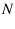 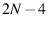 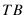 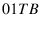 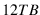 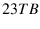 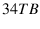 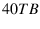 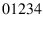 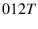 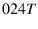 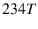 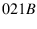 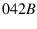 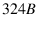
The challenge with edge swapping is that the number of possible configurations grows rapidly with the number of tetrahedra incident on the edge to be removed, as seen in the table below. In practice, the number of successful 7-for-10 swaps is very small, so GRUMMP does not explore possible swaps for more complex initial configurations.
| Tets before | 3 | 4 | 5 | 6 | 7
Tets after |
Clearly, checking the quality of each tetrahedron in each possible configuration is a costly undertaking; instead, GRUMMP computes the quality for each unique tetrahedron only once, then determines the quality of a given configuration by finding the minimum quality among its tetrahedra.
To simplify bookkeeping, GRUMMP takes advantage of the symmetries of the post-edge-swapping configurations and stores only a small set of canonical configurations, as shown in Figure 5.3. For each configuration, GRUMMP also stores connectivity information for the post-swap configuration.
For both face and edge swapping, swapping can be done with the goal of maximizing the minimum sine of dihedral angles or of minimizing the maximum dihedral angle. Also, face swapping can use the Delaunay criterion. The maxmin sine criterion eliminates both small and large dihedral angles, and is recommended choice in GRUMMP.
Code for swapping can be found in src/2D/MeshOpt2D.cxx, src/2D/Reconnect2D.cxx, src/3D/MeshOpt3D.cxx, src/3D/Reconnect3D.cxx, and src/3D/InitCanon.cxx.